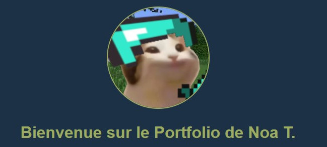
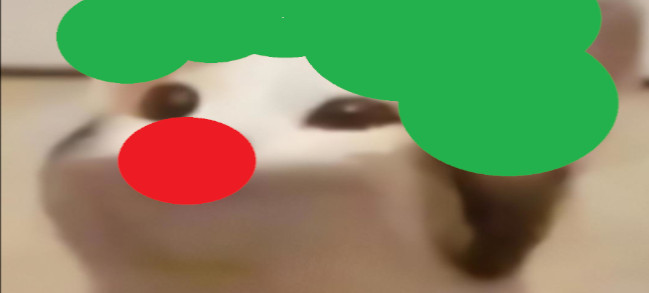
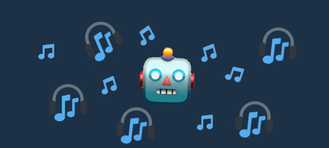

Projets réalisés



Autres projets
J'ai également collaboré avec des petites associations évoluant dans l’e-sport, qui souhaitaient disposer de bots adaptés à leurs besoins. Voici quelques exemples de solutions que j’ai développées :
- Un bot de modération pour gérer efficacement les serveurs.
- Un bot dédié à la gestion des tickets de recrutement.
- Un bot pour simplifier les tâches administratives sur Discord.